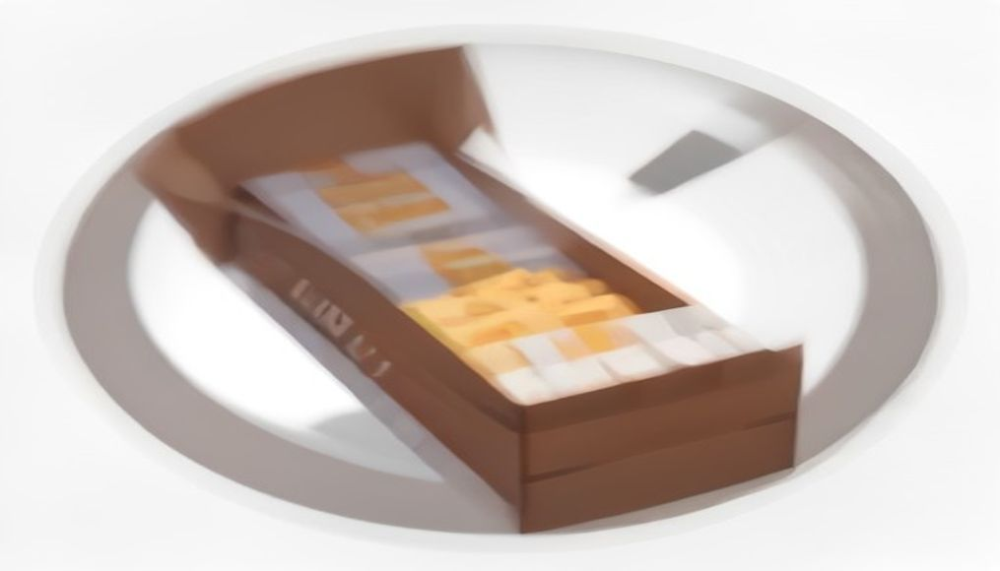
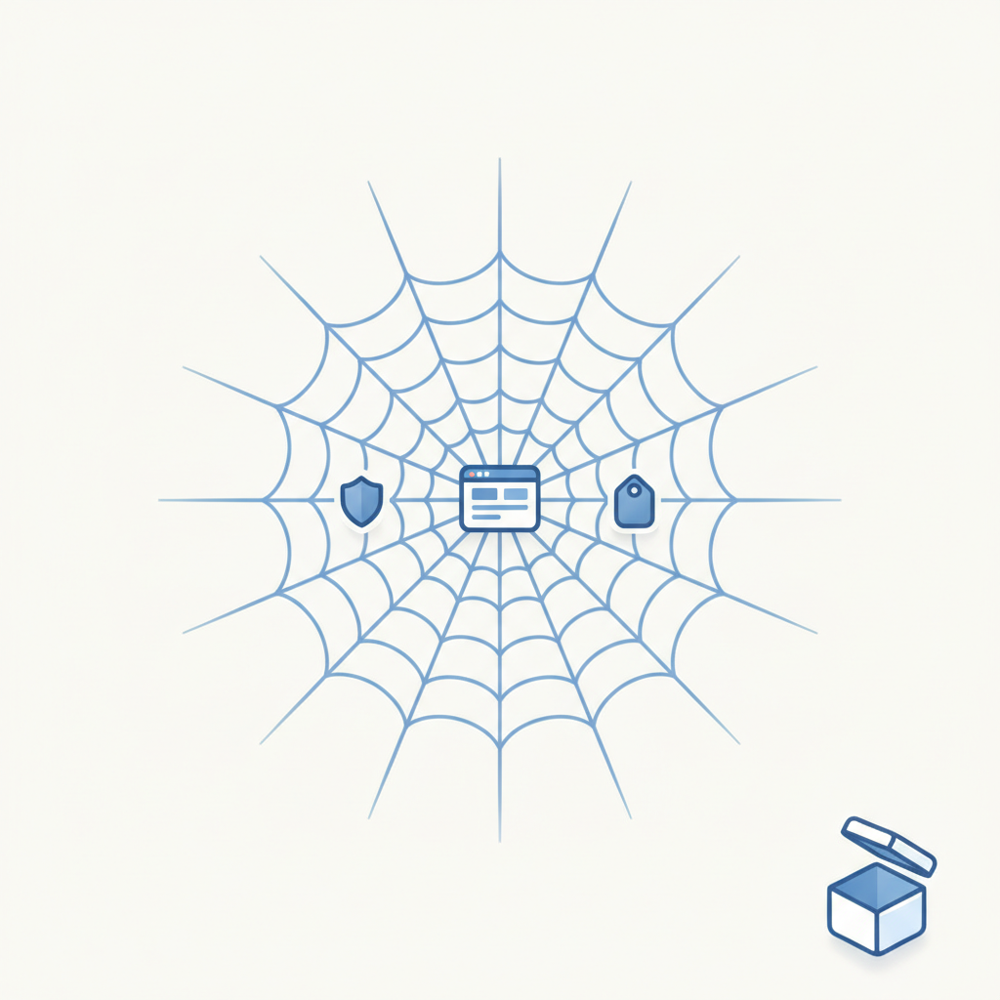
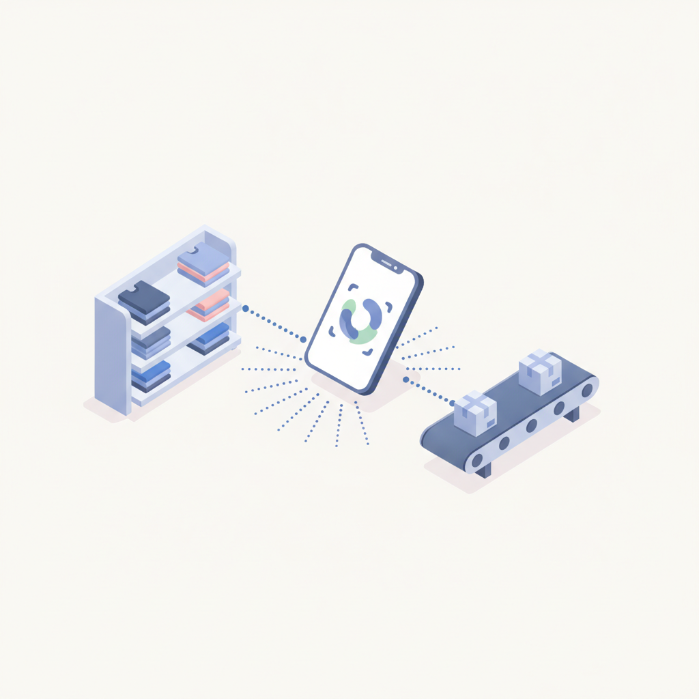
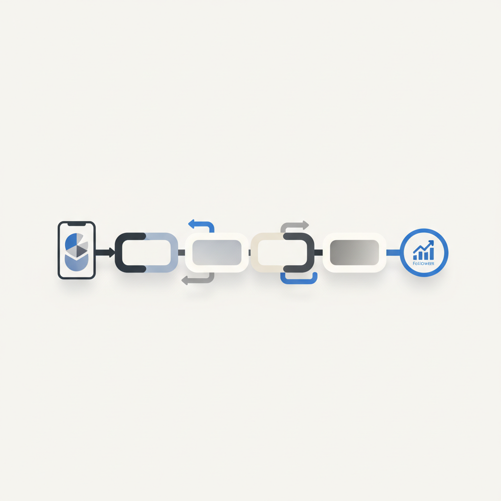
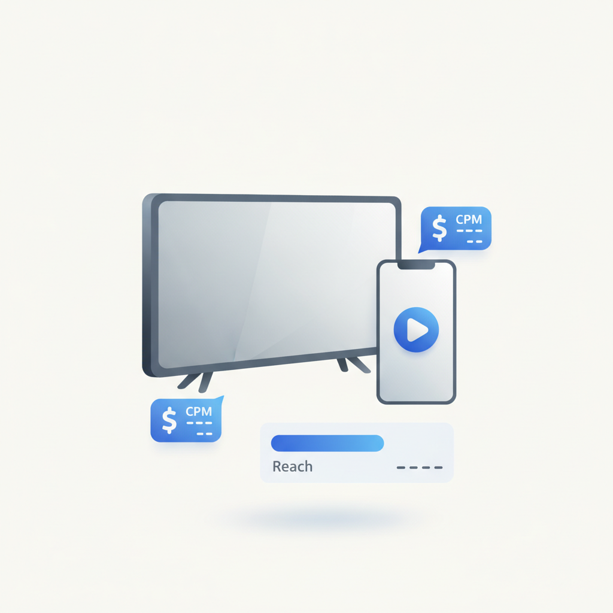
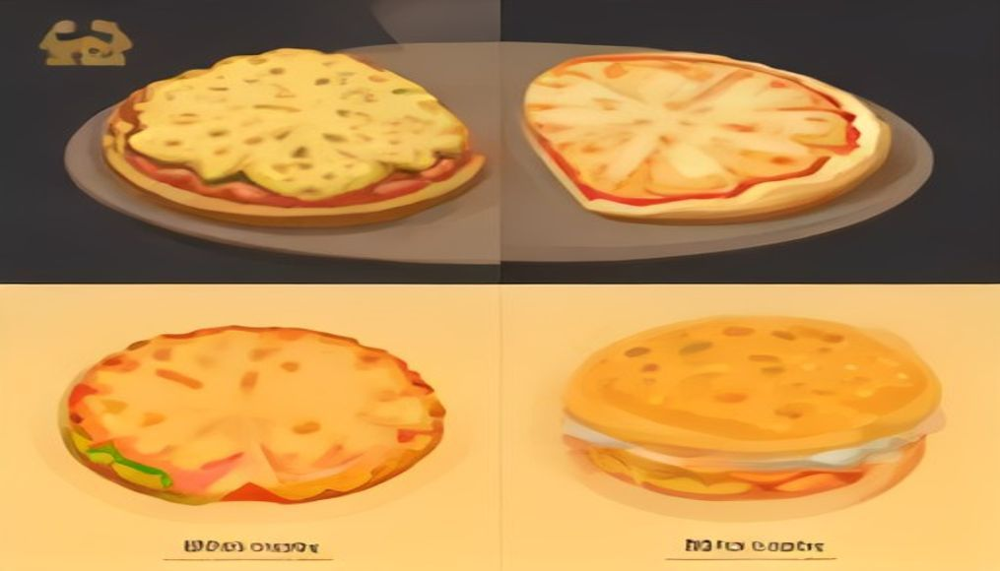
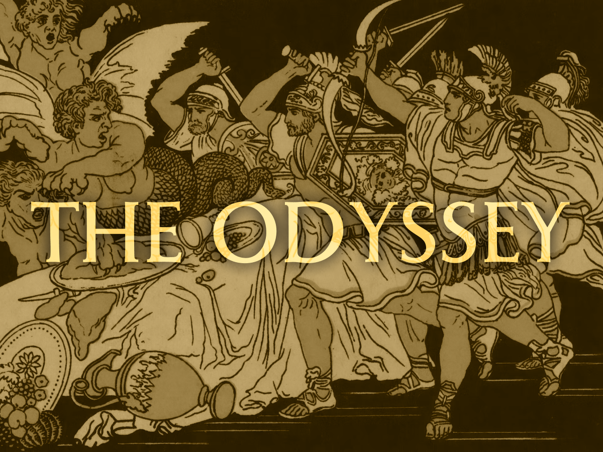

안녕하세요! 목요일 마케팅 소식 전해드립니다 😊 오늘은 헤이팝의 소식이 흥미롭습니다. 사전 예약에 4만 명이 몰린 '말랑페스타'와 1년 만에 돌아온 디앤디파트먼트 서울 이야기인데요, 두 사례 모두 단순한 전시나 팝업을 넘어 특정 취향과 라이프스타일을 중심으로 사람들을 모으는 방식이 얼마나 강력한지를 보여줍니다. '좋아하는 것'을 매개로 한 공간 경험이 디지털 채널이 채울 수 없는 결속력을 만들어내는 흐름은, 브랜드가 오프라인을 어떻게 설계해야 하는지에 대한 힌트이기도 합니다.
마케팅 뉴스에서는 브랜드 소셜 전략의 변화가 두드러집니다. 숏폼과 추천 알고리즘이 소비 방식을 재편하면서 개별 게시물 최적화보다 반복적으로 이어지는 콘텐츠 시리즈로 브랜드와 소비자의 관계를 쌓아가는 방향이 부각되고 있습니다. 한 번의 바이럴보다 꾸준히 돌아오게 만드는 구조를 설계하는 것, 지금 소셜 운영의 무게중심이 그쪽으로 이동하고 있습니다. AI 검색 확산으로 SEO만으로는 브랜드 노출을 보장하기 어려워졌다는 소식도 함께 살펴보시길 권합니다.
오늘 하루도 힘차게 달려보시길 바랍니다! 💪

1쿠팡이츠, 로켓배송 인프라 활용한 퀵커머스 '쿠팡나우' 시동
쿠팡이츠가 9개월 만에 자체 재고 기반 퀵커머스에 재도전하며 '쿠팡나우'를 준비 중이다. 기존 쿠팡이츠마트가 전용 MFC를 별도 운영했던 것과 달리, 쿠팡나우는 기존 로켓배송 물류 인프라를 그대로 활용해 거점 신설 없이 운영 지역 확장이 가능하다. 퀵커머스 시장에서 인프라 효율을 앞세운 쿠팡의 재진입은 경쟁 플랫폼과 브랜드 자사몰 모두에 직접적인 영향을 줄 수 있어 주목된다.
›
2AI 크롤러 시대, 콘텐츠 기업 대응 3가지 방향
클라우드플레어에 따르면 앤트로픽 AI 크롤러는 3만8,000회 수집 요청 대비 원문 방문은 단 1회에 불과해, 콘텐츠를 공개해도 트래픽을 돌려받지 못하는 구조가 현실화되고 있다. 이에 뉴스코프는 AI 기업에 콘텐츠를 판매하고, 네이버는 크롤링을 차단하며, CJ온스타일은 오히려 AI에 데이터를 개방하는 방향으로 각자 대응책을 선택했다. 마케터는 자사 콘텐츠 자산이 AI 검색 환경에서 어떻게 소비·유통되는지 점검하고 전략 방향을 결정해야 할 시점이다.
› 3AI 검색 시대, 브랜드 전략은 '순위'보다 '운영'
생성형 AI가 검색 결과를 직접 요약·답변하는 방식이 확산되면서 기존 SEO 중심 전략만으로는 브랜드 노출을 보장할 수 없게 됐다. 미디어센스는 최근 보고서에서 AI 검색 환경에서는 순위 관리보다 AI가 참조할 수 있는 신뢰성 있는 콘텐츠 운영이 핵심이라고 강조했다. 마케터는 검색엔진 최적화를 넘어 AI 답변에 자사 브랜드가 올바르게 인용될 수 있도록 콘텐츠 구조와 신뢰도를 관리하는 AEO(AI Engine Optimization) 관점의 전환이 필요하다.
›
4GAP, 매장·물류센터 직원까지 '임플로이언서'로 확대
갭(Gap Inc.)이 올드 네이비, 갭, 애슬레타, 바나나 리퍼블릭 등 자사 브랜드의 직원 크리에이터 프로그램 대상을 본사 직원에서 매장·물류센터 직원 전체로 확대했다. 지난해 10월 본사 직원 대상으로 시작한 이 프로그램은 임직원을 브랜드 홍보 크리에이터로 활용하는 '임플로이언서' 전략의 일환이다. 인플루언서 마케팅 비용 부담이 커지는 상황에서 내부 구성원을 진정성 있는 브랜드 채널로 전환하는 이 전략은 국내 리테일·패션 마케터에게도 참고할 만한 사례다.
›
5브랜드 소셜 전략, '개별 게시물'에서 '콘텐츠 시리즈'로
숏폼과 추천 알고리즘이 소셜미디어 소비 방식을 바꾸면서 개별 게시물 성과 최적화보다 반복적으로 이어지는 콘텐츠 시리즈를 통해 브랜드와 소비자 간 관계를 구축하는 전략이 중요해지고 있다. 소셜미디어 분석 기업 몬도 메트릭스의 창업자 닉 시세로는 '오늘날 소셜에서 중요한 것은 Recurring Content'라고 강조했다. 마케터는 일회성 바이럴 게시물 중심에서 벗어나 팔로워가 반복 방문하게 만드는 시리즈형 콘텐츠 기획으로 운영 방식을 전환할 필요가 있다.
›
6코바코 '방송광고 구매가이드' 발간…TV CPM, 유튜브보다 낮다
한국방송광고진흥공사(코바코)가 디지털 광고에 익숙한 신규 광고주를 위한 '방송광고 구매가이드'를 발간했다. 가이드는 지상파 TV가 매월 4,473만 명에게 도달하는 매체이며 CPM 기준으로 유튜브·넷플릭스보다 낮은 수준이라는 점을 앞세워 TV 광고의 비용 효율성을 강조했다. 디지털 예산 집중 시대에 TV 광고의 도달 효율을 재평가하고 미디어 믹스를 재검토하려는 마케터에게 실질적인 참고 자료가 될 수 있다.
›
7햄버거·피자는 3040대, 치킨은 4050대가 더 많이 결제
올해 4~6월 패스트푸드 카드 결제 데이터 분석 결과, 맥도날드·롯데리아·버거킹·도미노피자·파파존스는 3040대 결제 비중이 높았고, 교촌·BHC·BBQ 등 치킨 브랜드는 4050대 비중이 두드러졌다. 맘스터치는 30대 이하 젊은 층에서 강세를 보였으며, 6월 기준 1인당 평균 결제금액은 치킨이 가장 높았다. 카테고리별로 핵심 고객 연령층이 뚜렷하게 갈리는 만큼, 식품·외식 마케터는 타깃 연령대에 맞는 채널과 메시지 전략을 차별화할 필요가 있다.
›


오늘은 2800년 넘게 읽힌 책을 한 권 소개하려 합니다. 고대 그리스의 시인 호메로스의 『오디세이아』.
아티클 읽기 →브랜드 진단부터 지금 당장 해야 할 우선순위까지,
30분 무료 상담에서 함께 정리해드려요.
이미 수십 개 브랜드가 상담받았습니다.
내 브랜드처럼, 함께 고민하는 팀원의 마음으로 봅니다.
스타트업 대표·마케팅 담당자를 위한 30분